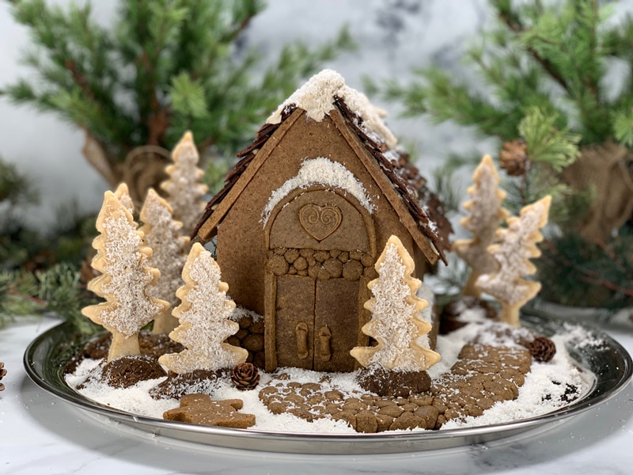
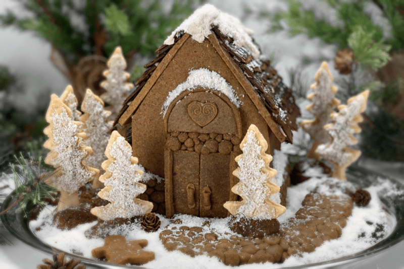
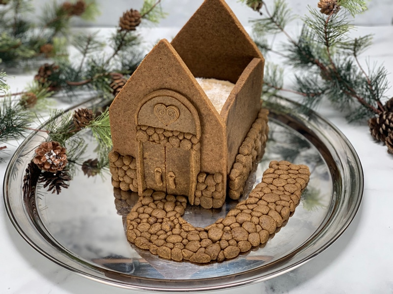
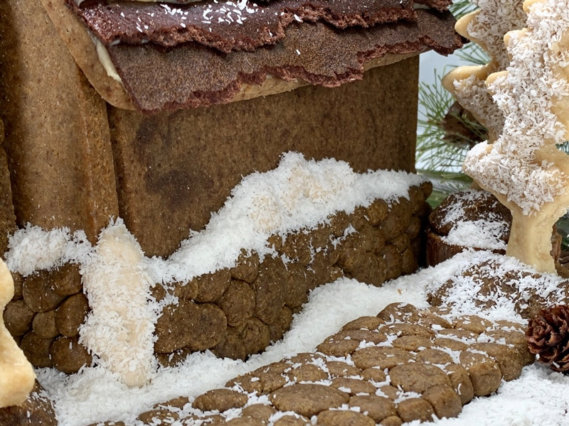
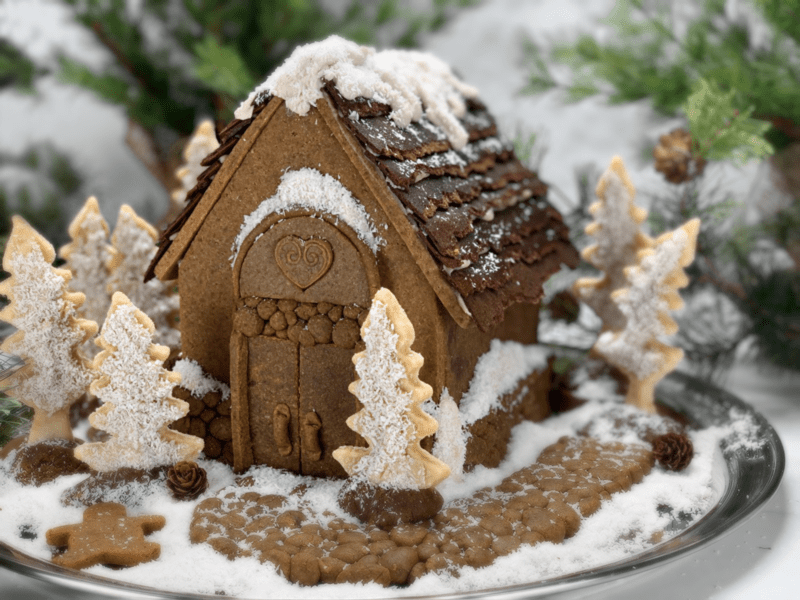

Humble Gingerbread House
Everybody loves the idea of making a gingerbread house as the holiday season approaches, but that’s about as far as most of us get. As I was constructing this gingerbread house, I would explain to those around me just how challenging it is to create a raw, vegan, healthy(er) version. Their first comment was always, “Are they meant to be eaten? Just use the junk stuff.” Well, slap me upside the head with a gingerbread man! I mean really… do they not know who they are talking to? haha

I went to Pinterest for some gingerbread house ideas but soon shut down my research. I was overwhelmed by the beauty of the gingerbread houses, yearning to make mine JUST as pretty as they were. But I knew that I couldn’t create what I was seeing. I don’t use refined sugars, corn syrup, prebought fondant, and icing pens. If I were to create what I was witnessing before my eyes, I would just as soon use plaster, paint, clay, and glitter!
My Gingerbread House Goal
Okay, my goal was to make something 100% edible, enjoyable to the pallet, a house with a nutrient-based foundation. I won’t pull the wool over your eyes and tell you that making this gingerbread house was easy. Well, it wasn’t easy, it was time-consuming, and a lot of thought and timing had to go into it. And if I am going, to be honest here (which I always am), I created this house without any planning. Each step of construction took place on the spur of the moment. Let’s refer to it as experimental inspiration!
Not having a plan lead to a little downtime. For instance, the roof, I ran out of roofing materials halfway through the job. Bob volunteered to make a run to the “hardware store” which gave me time to lay down “pavers” for the pathway and lower siding of the house. Who knew I would develop skills of culinary masonry?! I grew up around construction workers so let’s see if I can put my power of observation to work and explain my thought process.
Recipes & Techniques for each component

The Main Structure
For the house structure, I used the Hum Mud cookie recipe. Not only for the flavor but also because I knew that the Hum Mud recipe creates solid cookies. I didn’t want a wall to collapse after the tenants moved in.
Items Needed
- Hum Mud cookie recipe
- Gingerbread house cookie cutters or a pattern.
- Christmas music – this helps encourage creative inspiration
Tips & Tricks
- I used my Hum Mud Cookie recipe for the house structure. You can use other raw cake recipes just make sure you know your dough. It needs to be thick, dry to the touch, delicious, and nutritious. Don’t use cookie doughs that have grainy chunks in them. Don’t use wet or super sticky cookie doughs.
- The amount of cookie dough needed for the house will depend on cookie cutter or pattern size that you are using. Make more than what you think you’ll need because as you start working on the house, your creative juices will start flowing. Any extra dough can be used for shaping cookies or can even be frozen for later use.
- Roll the dough out evenly and about 1/4″ thick. You can go thicker but don’t go thinner. As the house goes up, the weight will increase, and it could collapse.
- Make sure all edges of the house are straight. If they are wonky, your house won’t seal up nice and snug.
- While the house pieces are drying in the dehydrator, make the frosting, so it has plenty of time to set up (recipe link down below).
- I wasn’t teasing about the Christmas music. Music fills the heart with joy. Joy = love = inspiration = creativity.
Infrastructure
The meaning of infrastructure is the underlying foundation or basic framework. I knew that I needed to create a solid foundation to help hold the house up. I wasn’t going to rely on frosting tacking it all together. That would be a sure fire way to void your homeowner’s insurance. One thing to keep in mind is that raw cookie dough is much heavier than baked cookie dough. Therefore it puts more stress on the walls/structure.
Due to this, I decided to fill the inside of the house with a raw cake (who wants an empty house?). Not only would this double as structural support, but it would also be a delicious dessert to enjoy as the demolition (eating) of the house took place. For the inner house cake, I made two Blood Orange Pecan Date Cakes (minus the frosting and blood oranges). You could use any cake recipe, just make sure the flavors complement the gingerbread house flavors. Once the cake was made and shaped to fit snug within the walls of the house, I gave it a light coating of my raw, vegan White Cake Frosting. Think of the frosting as if it was nails holding the sides of the house to the cake.
Items Needed
- Raw cake; you will need 1-2 cake batches (depending on square footage of house).
- The dehydrated gingerbread house components (sides, front, back, and tops).
- One batch White Cake Frosting (makes 5 cups, but you will want extra).
- Parchment paper and twine.
Tips & Tricks
- Start building your house on the serving platter that you plan to use for display. You will risk house damage if you try to move it once construction has started. Use something larger than you think you might need. Better to have too much space than not enough.
- The frosting recipe that I shared above is perfect for this project. It takes a good portion of the day to set up but it pipes beautifully for decoration things later, and it holds up to room temperatures that are 70 degrees (F) and below.
- Don’t worry about perfecting the look of the frosting on the cake; you won’t see it. The purpose of the frosting is to help hold the sides of the house to the cake.
- Once the four walls are up against the cake, wrap some parchment paper around the house and secure it with twine. I tried tape, but it doesn’t stick to parchment paper. Set the partially built gingerbread house in the fridge while you work on the roof. Chilling it will help firm the frosting back up. Don’t leave it in there too long or the cookie walls will start to get tacky and soften some. If this happens (say you got a long winded call from your closest friend) don’t fret. Just let the cake sit out in the open air. It should firm and dry things back up.
The Roof
Typically a roof is made of wood, asphalt, asbestos shingles, tile, slate or metal. But before any roofing is laid down you need to install underlayment and flashing such as asphalt, felt-paper, or special waterproof underlayment. This goes between the roof and the shingles. For our humble abode, I used White Cake Frosting. Just a thin layer to help the shingles adhere to the cookie rooftop.
Now it was time to create the shingles. I wanted to keep an overall monotone look to the house, so I knew that I wanted the shingles to be brown. This lead me to my Chocolate Banana Leather recipe. I knew it would be sturdy, flexible, dark brown, and when torn into strips it has a two-tone weathered appearance. After the leather had dried, I hand tore it into 3/4″-1″ strips (the length of the roof). One side is torn and the other side I used scissors to cut. See photos to understand.
Assembly – Give the roof piece(s) a think coating of the White Cake Frosting. Again, this is working like a glue. Starting from the bottom of the roofline, lay down one strip of leather (the hand tore edge should always be pointing downward. Pipe a medium sized line of frosting on the straight edge of it to create a little lift for the next strip of leather. I repeated this process all the way to the other side of the roof. Be sure to overlap each strip, just like real life house shingles.
Here’s the trickiest part of creating the house… placement of the roof. Because of the pitch of the roof and the weight of it, we need to adhere it to the house structure, so it doesn’t slide off or collapse the walls. I tried piping a line of frosting on the tops of the walls for the roof edges to rest on. Nope, it didn’t hold. I ended up cutting two toothpicks in half, pushing it through the top corner of the roof piece down into the top of the supporting wall.
I created a ridge (the top intersection of two opposing adjoining roof surfaces) by piping a heavy strip of the White Cake Frosting down the center. I also squiggled it back and forth to give it the loft and appearance of snow sitting on the peak of the roof.
Items Needed
Tips & Tricks
- Decorate the roof tiles before placing them on the gingerbread house structure. The more you touch, wiggle, and fuss on the house, the more unstable it will become.
- When using the toothpicks to hold the roof to the walls, don’t forget about them when serving the gingerbread house to your family or guests. You don’t want a person to choke on them.
- The Chocolate Banana leather should be thick enough to handle and pliable. Don’t over dry. This recipe typically remains very flexible but the edges can dry crispy if they over dry. This happened to me, just cut these edges off before you start tearing the strips.
Decorating and Embellishing
Now comes of the fun part. Heck, it’s all fun but building the house structure is a little stressful. The design is personal and completely up to you. You can make 3-dimensional doors and windows.

Walkway and “Rock” Siding
- I created a walkway that wrapped around one side of the house and created a “rock” wainscoting all on four walls of the house. I took extra Hum Mud cookie dough and rolled it into various sized balls. I then randomly butted them up against one another, forming the shape needed.
- You can keep these components raw or you can dehydrate them before adding to the house. If you plan on dehydrating them (like me), you will want to build these on the nonstick sheet that fits on your dehydrator tray.

Front Door and Trim
- I used a straight-edged ruler to create the door that I needed for the house. Don’t forget the handle pulls.
- To give the house a coherent look, I made a tiny section of “rocks” above the door and then topped it off with an arched header. To create the arch shape, I used a circular cookie cutter and just used one side to create the shape.
- Build these pieces on the nonstick dehydrator sheet so you don’t have to transport them while soft and pliable.
The Snowy Effect
- I used finely shredded dried coconut and more of the white cake frosting for this job.
- I sat back and gave the house a good stare-down. I placed mounds of frosting on the house and around it in places where it would naturally fall and gather. For instance, on the rock wainscoting, the top of the door, the roofline, down around the base of the house, the walkway, and so forth.
- Pipe the frosting in these places and then sprinkle the dried coconut on top.
Trees
- I created raw sugar cookie trees, frosted them with the white cake frosting, and dusted them with the dried coconut.
- To help them stand up, I used extra Hum Mud dough, created a log shape, pressed it onto the counter, and poked the base of the tree into the dough. Make sure to press the raw Hum Mud dough firmly to the tree. I then placed them around the house.
- If possible try to create different heights with the trees for a more realistic look.
- Sprinkle more dried coconut around the bases of the trees to tie it all together.

I am so happy to be sharing this creation with you. It was so much fun to make. Please share your thoughts with me below. Have a blessed and wonderful holiday. amie sue
© AmieSue.com